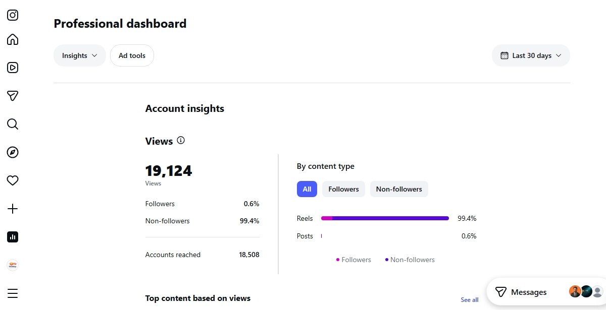
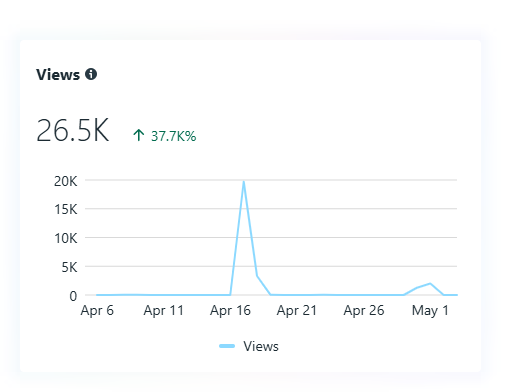
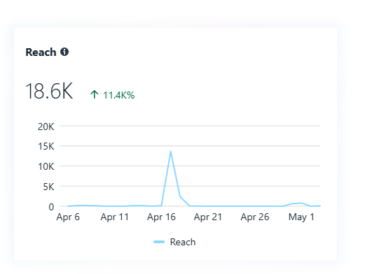
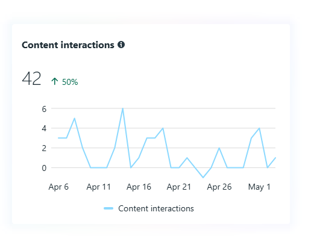

Instagram / Content strategy
Building a more consistent social presence
A focused content approach brought profile presentation, publishing, and audience engagement into a clearer system.
Explore case studies ↗Selected work / Portfolio
A selection of social media performance work and digital projects. Each engagement starts with understanding the business, then shaping content and campaigns to support its goals.
Discuss a project ↗
Instagram / Content strategy
A focused content approach brought profile presentation, publishing, and audience engagement into a clearer system.
Explore case studies ↗
Instagram / Audience reach
Content sequencing and platform-aware creative helped strengthen discovery and keep the brand in front of its audience.
Social media services ↗
Instagram / Traffic actions
Clearer calls to action helped make the path from social content to a business destination easier to follow.
Digital marketing services ↗
Facebook / Brand reach
A consistent social presence supports broader awareness and gives customers more ways to discover and recognize the business.
Explore case studies ↗.png)
Facebook / Campaign traffic
Campaign messaging and social content were aligned to make useful business information and next steps more accessible.
Digital marketing services ↗
Facebook / Engagement
Relevant, consistent creative helped create more opportunities for customers to engage with the brand and its content.
Creative services ↗A note on our work
Portfolio visuals show examples of platform activity and project work. Outcomes vary by audience, market, budget, and execution; we do not guarantee specific results.
Start a conversation ↗